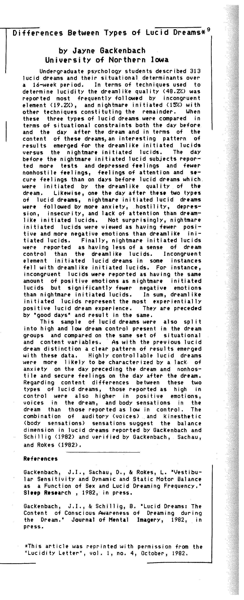

Undergraduate psychology students described 313 lucid dreams and their situational determinants over a 16-week period. In terms of techniques used to determine lucidity the dreamlike quality (48.2%) was reported most frequently followed by incongruent element (19.2%), and nightmare-initiated (15%) with other techniques constituting the remainder. When these three types of lucid dreams were compared in terms of situational constraints both the day before and the day after the dream and in terms of the content of these dreams, an interesting pattern of results emerged for the dreamlike-initiated lucids versus the nightmare initiated lucids. The day before the nightmare-initiated lucid subjects reported more tests and depressed feelings and fewer non-hostile feelings, feelings of attention and secure feelings than on days before lucid dreams which were initiated by the dreamlike quality of the dream.
Likewise, on the day after these two types lucid dreams, nightmare-initiated lucid dreams were followed by more anxiety, hostility, depression, insecurity, and lack of attention than dreamlike-initiated lucids. Not surprisingly, nightmare-initiated lucids were viewed as having fewer positive and more negative emotions than dreamlike-initiated lucids. Finally, nightmare-initiated lucids were reported as having less of a sense of dream control than the dreamlike lucids. Incongruent element initiated lucid dreams in some instances fell with dreamlike-initiated lucids. For instance, incongruent lucids were reported as having the same amount of positive emotions as nightmare-initiated lucids but significantly fewer negative emotions than nightmare-initiated lucids. In sum, dreamlike-initiated lucids represent the most experientially positive lucid dream experience. They are preceded by "good days" and result in the same.
This sample of lucid dreams were also split into high and low dream control present in the dream groups and compared on the same set of situational and content variables. As with the previous lucid dream distinction, a clear pattern of results emerged with these data. Highly controllable lucid dreams were more likely to be characterized by a lack of anxiety on the day preceding the dream, and non-hostile and secure feelings on the day after the dream. Regarding content differences between these two types of lucid dreams, those reported as high in control were also higher in positive emotions, voices in the dream, and body sensations in the dream than those reported as low in control. The combination of auditory (voices) and kinesthetic (body sensations) sensations suggest the balance dimension in lucid dreams reported by Gackenbach and Schillig (1982) and verified by Gackenbach, Sachau, and Rakes (1982)
References
Gackenbach, J.I., Sachau, D., & Rakes, L. Vestibular Sensitivity and Dynamic and Static Motor Balance as a Function of Sex and Lucid Dreaming Frequency, Sleep Research , 1982, in press.
Gackenbach, J.I., & Schillig, B. Lucid Dreams: The Content of Conscious Awareness of Dreaming during the Dream, Journal of Mental Imagery, 1982, in press.
This article was reprinted with permission from the "Lucidity Letter", vol. 1, no. 4, October, 1982. You can find the PDF here
